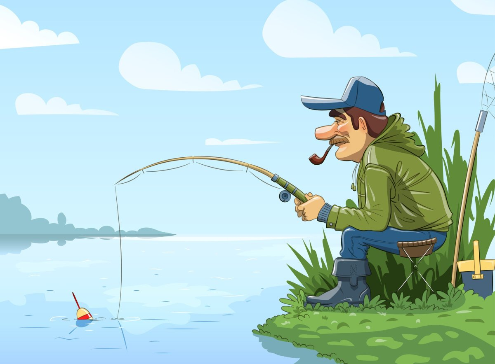

Место которое мне приснилось во сне и которое я обнаружил на яву. прекрасно провели время с друзьями порыбачили и отдахнули.

Это чудное место мне однажды приснилось во сне и я ни как не мог подумать что когда либо увижу его на яву. И какого же было мое удивление когда однажды проезжая мимо знакомой реки я увидел то что мне приснилось во сне. Приехав домой я собрал друзей и поделился своим планом: взять пару удочек, казан, палатки и рвануть в это чудное место на пару деньков.
Этот день настал, кастер распален, котелок закипал, а рыба все никак не хотела перебираться из прохладной водички в бурлящий кипяток. У каждого из друзей телефон уже был забит историями и фотками с хэштегом “отдых на природе”
С собой на отдых необходимо взять:
Обязательно перед выездом не забыть:
Вот пара сайтов где можно посмотреть всё необходимое для отдыха и рыбалки:
Моя тестовая страничка